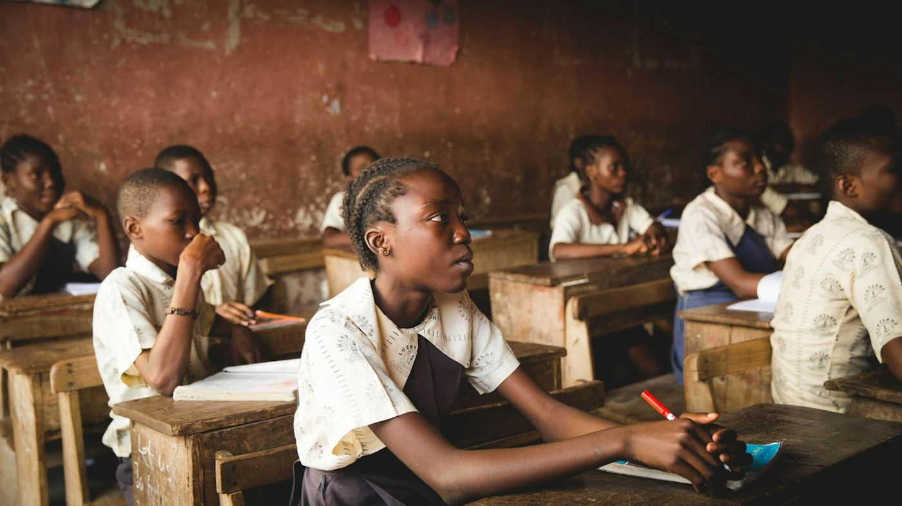
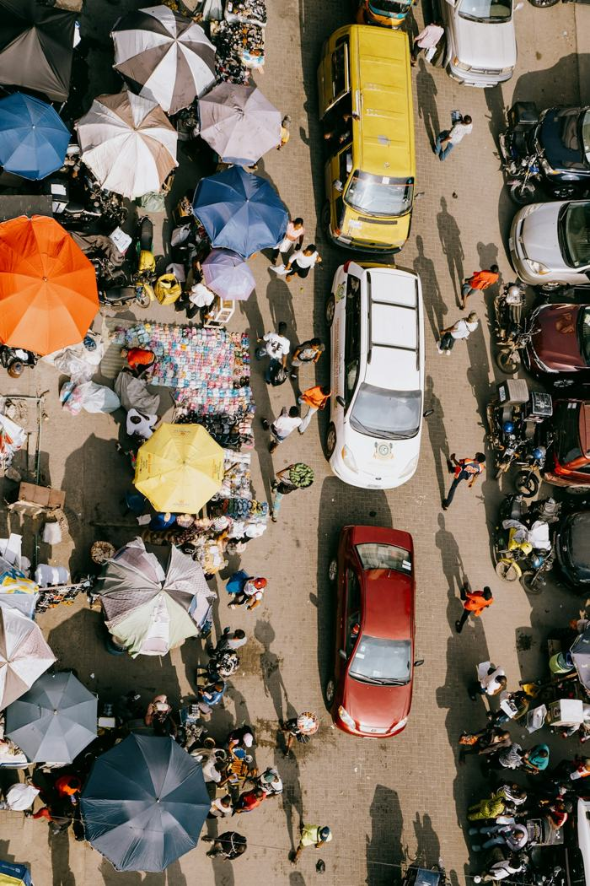

Mission
To empower students with the knowledge and tools they need to succeed in a changing economy, not just to pass an exam, but to navigate life beyond it.
Who Are We?
We exist to close the gap between what students learn and what they can do with it, turning classroom knowledge into real solutions for real communities.
To empower students with the knowledge and tools they need to succeed in a changing economy, not just to pass an exam, but to navigate life beyond it.
To create a synergy between the theory and practicability of education, where what a student learns and what a student can do are no longer two separate things.
Our Values
Every initiative we run is built, tested, and judged against five pillars:
We track real outcomes, not just attendance.
Our programs are designed to work in real classrooms, real communities, with real constraints.
We look for new ways to connect learning to life, not recycled assembly hall motivation.
Our impact is built to outlast our presence in a school.
Every student who takes part should leave seeing their education differently


Why We Exist
Across Nigeria, students are trained to memorize and repeat, but rarely shown how to apply.
A student can excel in Economics and never once use it to understand the market down the street. A student can master Chemistry and never connect it to the water problems in their own community.
We are not against the curriculum. We believe education can do more than it currently does.
Starting 2027, Beyond4Walls is systemically and strategically addressing this gap, until every student has a reason to see education as more than an exam to pass.
Our Strategy
We don't change how students see education overnight. We take them through a deliberate progression:
Shift how students see their education, from something to memorize, to something to use.
Build the practical ability to apply subject knowledge to real problems.
Let students practice that application in a safe, guided environment, solving real local problems as a low-stakes rehearsal for the real world.
Connect students to actual opportunities to apply what they've built, within their communities, industries, or economy.
Each stage builds on the one before it. A student cannot skip to real-world placement without first shifting their mindset and building the skillset to back it up. This is what makes our impact sustainable rather than a one-day spark.
Beyond the Classroom
What we do is not just an education intervention, it is a development intervention. By teaching students to apply their learning to real problems, we are directly contributing to:
Moving education from rote learning to applied, meaningful learning.
Preparing young people to engage productively with the real economy, across the primary, secondary, tertiary, and quaternary sectors alike, long before they enter the workforce.
Equipping the next generation to solve local economic and social problems using knowledge they already have, rather than waiting for solutions to arrive from elsewhere.
This is why our work is positioned not just as a school program, but as a scalable, measurable contribution to national and global development goals, and why we welcome partnership from organizations and institutions who share that mandate.
Partner With UsWhether as a partner, a sponsor, or a change-maker ready to get involved - we'd love to hear from you.
Get In Touch